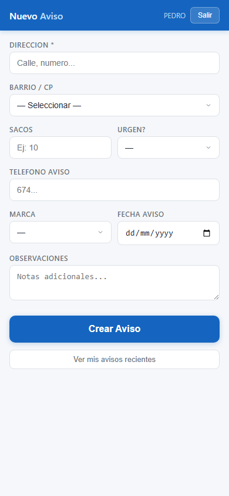
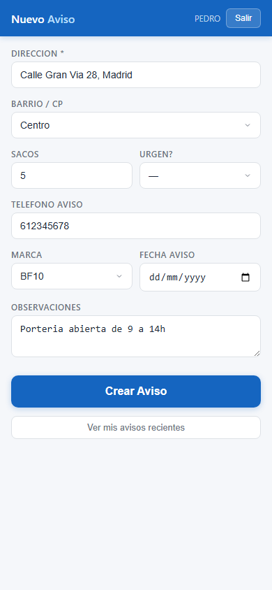
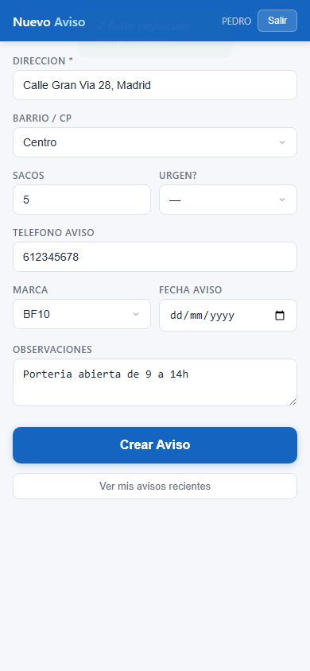
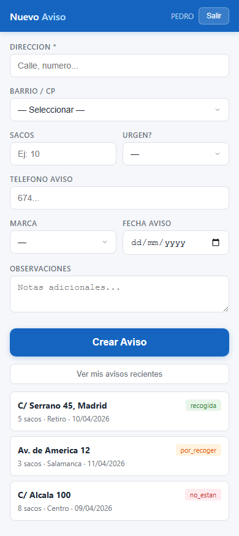

Guia de uso de la app de registro de avisos de recogida
BF10 Sacos de EscombroAl entrar en la app veras el formulario de creacion de avisos. En la cabecera aparece tu nombre y el boton "Salir".

| Campo | Descripcion | Obligatorio |
|---|---|---|
| Direccion | Calle y numero donde estan los sacos. Al escribir, Google sugiere direcciones automaticamente. | Si |
| Barrio / CP | Zona o barrio. Se detecta automaticamente al seleccionar una direccion de Google, pero puedes cambiarlo manualmente. | No |
| Sacos | Numero aproximado de sacos a recoger. | No |
| Urgen? | Indica si la recogida es urgente (SI/NO). | No |
| Telefono aviso | Telefono de contacto del cliente. | No |
| Marca | Marca de los sacos (BF10, Servisaco, Atusaco, etc.). | No |
| Fecha aviso | Fecha en que se realiza el aviso. Por defecto, hoy. | No |
| Observaciones | Notas adicionales: horario de porteria, piso, instrucciones especiales. | No |


Pulsa el boton "Ver mis avisos recientes" debajo del formulario para consultar los avisos que has registrado. Cada aviso muestra la direccion, los sacos, el barrio, la fecha y el estado actual.

| Estado | Significado | Color |
|---|---|---|
| por_recoger | Pendiente de recogida. Aun no se ha asignado o completado. | Naranja |
| recogida | Los sacos ya han sido recogidos por el conductor. | Verde |
| no_estan | El conductor fue pero los sacos no estaban. | Rojo |